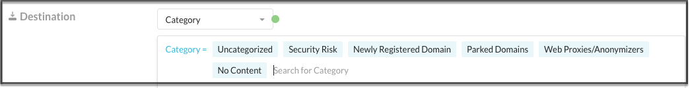

Create a Real-time Protection Policy for Isolation (Targeted RBI)
Policies are defined using a set of variables. These variables define the criteria for detecting policy violations.
For descriptions for each of the variables used, refer to Real-time Protection Policy Variables.
Note
When you see a text box during the policy workflow, click in the text box to view your additional options or to edit your selection(s). These options dynamically display based on your initial template choice. Many criteria are set to ‘Any’ by default. This means the policy engine will not match against the criteria.
When available, click Add Criteria to see what other match criteria are supported. Add more criteria to your policy to make it more specific.
Optionally, click the 'X' to the far right of the text box to remove a criteria.
To create a Targeted RBI Policy you need to take into account the following constraints and configurations for webpages to be isolated properly.
On the Real-time Protection Policies page, click New Policy> Web Access. Your menu options may differ based on the licenses available for your account
Important
Only Web Access is supported for targeted RBI.

Select the Source. Click in the text box to select users. Traffic Criteria is sorted as 'Source' and 'Destination.' The system will show the most appropriate criteria based on your policy template selection. Many criteria are set to 'Any' by default. This means the policy engine will not match against the criteria.
Optionally, click Add Criteria to see what other match criteria are supported. Add more criteria to your policy to make it more specific.

For Destination, Category is automatically selected and it’s the only criteria that can be used for targeted RBI. You can choose to isolate any web page which falls in the following category list:
Newly Registered Domain,
No Content,
Parked Domains,
Security Risk (and/or any Security Risk sub category),
Uncategorized
Web Proxies/Anonymizers.
These categories are described in the RBI Category Definitions.
You can add more Destination criteria. The system will show the most appropriate criteria based on Application, Category, App Instance, or Private App selection. Leave this blank for RBI policies.
Select a Profile and Action. For RBI policies, select the "Isolate" action.
Do not add a DLP profile. They do not apply for targeted RBI.
Enter a name and a description.
Important
When creating policy names, only use alphanumeric characters and symbols such as "_" underscore, "-" dash, and "[ or ]" square brackets. You cannot use the greater than ">" and less than "<" symbols in policy names.
Select an Email Notification. Select the notification frequency. Choose None if you don't want an email notification about the policy violation and the resulting action. When you choose 'Every,' you can select the frequency of the email notifications from the dropdown list – 30 Mins, 60 Mins, 6 Hours, 24 Hours. Or, choose to notify 'After each event.'
Select the User, Admin, or Users to be notified. You can use the default email template or create a new template. Optionally, you can specify an email address that will appear as the sender in the email notification. When finished, click Done to save your email notification setting and exit the window.

Click Save in the upper right corner to save your new policy. You should see it in the Policy list page.